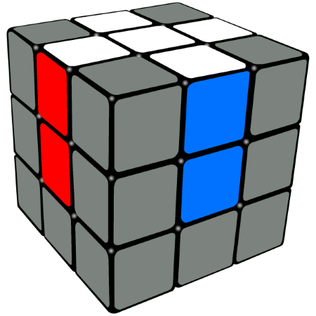

How To Solve The Rubik's Cube: A Short Guide
How To Solve The Rubik's Cube: A Short Guide  How To Solve The Rubik's Cube: A Short Guide
How To Solve The Rubik's Cube: A Short Guide The Rubik's Cube was invented in 1974 by Hungarian architect Ernő Rubik. It is a 6 sided colorful puzzle that was extremely popular in the 1980's. The craze died down in the 90's, however, it experienced a 21st century revival. You can buy cubes online at websites like...
In order to solve one of these puzzles, you will need to use a set of algorithms, or a memorized sequences of turns. This website will introduce these algorithms and teach you the 6 simple steps you need to solve the puzzle!
The cube has 3 different types of pieces. There are corner pieces, middle pieces, and center pieces. 
Corner pieces have 3 colors, middle pieces have 2, and center pieces have one. In the diagram above, the piece labeled "1" is a corner piece - it has 3 colors: blue, red and white. The piece labeled "2" is a middle piece - it has 2 colors: orange and blue. The piece labeled "3" is a center piece - it only has one color, in this case it is green. An important thing to note is that no matter how you twist or turn the cube, the center pieces will never move - they will always stay the same color.
There are 6 sides on the cube as well. If you are holding the cube normally, the side facing you is the "front face", the side parallel to front is the "back face", the sides facing the left and right are the "left face" and the "right face" respectively, and the remaining two faces are called the "up face" and "down face".
In an algorithm, turns are denoted by a single letter that represents a face that should be turned in a clockwise motion. If an algorithm requires a counter clockwise turn, the letter will have an apostrophe in front of it. For example, the sequence "F R' U' D" means that you will need to turn the front face clockwise, the right face counterclockwise, the top face counter clockwise, and the bottom face clockwise.
With this information, we are now ready to begin learning the steps.
First, locate the yellow face and orient the cube such that it is the top face. Move the middle pieces that are white so that the middle pieces are adjacent to the yellow center piece. There is no specific algorithm to perform this, so you will just have to use common sense to figure it out! When you are finished moving the middle pieces into place, it should like a daisy. Now look at the front side. Remember that middle pieces have two colors, in this case, the middle piece will be white and some other color - either blue, red, orange or green. If the center pieces matches the second color of the middle piece, then fantastic! Do the algorithm "F F". If it doesn't match, turn the top face until it does, then perform the algorithm. Do this for all of the "petals" of the daisy, or the white middle pieces. Once you have done this, turn the cube upside down, and you will have a white cross with matching center pieces as shown below!
Next, you want to move the white corners into place. Keep in mind that corner pieces have three colors while doing this. Some of your white corners might already be in place, but their other colors might not match the appropriate center piece. Disregard these pieces if you have them, we will fix them later. There are three main scenarios that your white corners will likely be in. Locate any white corner piece. The white side of the corner will either be on the front of the cube (facing you), on the bottom (facing the ground), or the on the right face (facing the right).